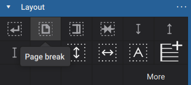
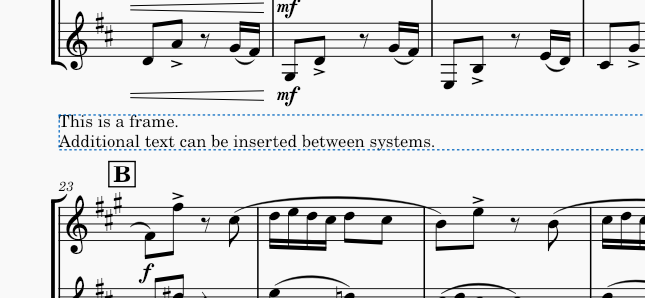

页面和垂直间距
功能
如垂直间距所述，MuseScore 会根据当前乐谱设置，用尽可能多的系统填满每个页面，然后根据两种不同算法之一调整每个页面内的间距。你还可以手动调整页面上的系统数量，或特定谱表或系统之间的间距。
分页符
分页符使 MuseScore 在给定系统之后结束一页，即使还能容纳更多系统。要添加分页符，请选择一个小节或框架，然后按 Ctrl+Enter（Mac 上为 Cmd+Enter）或单击排版面板中的分页符图标：

间距调节器
间距调节器是一种可以添加到小节以控制该特定谱表上方或下方空间量的排版元素。间距调节器可以增加或减少空间，并且可以在系统内或系统之间起作用。

要向乐谱添加间距调节器，请选择一个小节，然后单击排版面板中相应的图标：

你也可以将间距调节器从面板拖放到乐谱中的小节上。
添加间距调节器后，你可以通过选中它并拖动其手柄，或使用属性面板中的高度设置来调整其高度。有三种不同类型的间距调节器，高度设置会根据间距调节器类型对乐谱产生不同影响：
- 谱表向下间距调节器：确保此谱表下方至少有指定的空间量
- 谱表向上间距调节器：确保此谱表上方至少有指定的空间量
- 谱表固定向下间距调节器：确保此谱表下方恰好有指定的空间量
在所有情况下，当添加在系统内的谱表之间时，间距调节器在系统内起作用。此外，当添加到系统的底部谱表时，谱表向下间距调节器或谱表固定向下间距调节器在系统之间起作用；当添加到系统的顶部谱表时，谱表向上间距调节器在系统之间起作用。
垂直框架
垂直框架是用于容纳空白空间、文本或图像的容器，可以放置在乐谱中的系统之间。虽然垂直框架可以留空，从而以类似于间距调节器的方式起作用，但垂直框架的主要目的是添加文本或图像。有关更多信息，请参阅使用框架添加额外内容。

系统分隔符
在合奏音乐中，当多个系统适合放在一页乐谱上时，通常使用系统分隔符——在系统两端垂直居中于系统之间的一对斜线笔画。这有助于澄清系统之间的划分。

系统分隔符可以通过 格式→样式→系统 中的设置自动添加。你可以独立启用左侧和右侧分隔符。对于每个，可以自定义多个设置：
- 符号大小：在常规、长和超长之间选择。
- 缩放：符号缩放百分比。
- 偏移（水平和垂直）：距默认位置的距离。
- 水平对齐：系统分隔符可以在一页上最外侧系统小节线上居中，或对齐到页面边距。
任务
上面列出的功能可用于完成多种常见任务。
在页面上放置更少的系统
要在页面上放置更少的系统，只需向你希望出现在页面最后位置的系统或框架添加分页符。
在页面上放置更多系统
与水平间距一样，在某些情况下，可能无法在当前设置允许的情况下将更多系统放入页面。因此你可能还需要考虑更小的谱表大小，或在整个乐谱范围内减小最小系统距离，或其他样式更改。但是，在某些情况下，你可能可以通过手动减小特定系统之间的距离来将更多系统放入页面。
要减小两个特定系统之间的距离，请向上方系统的底部谱表添加一个谱表固定向下间距调节器，然后根据需要设置其高度。如果这种减小允许另一个系统放入页面，那么它会自动发生。
调整稀疏页面的间距
MuseScore 通常会展开系统和谱表以填满页面（有关更多信息，请参阅垂直间距）。但是，无论你启用还是禁用垂直对齐，特别稀疏的页面可能仍然看起来别扭。这对于乐谱的最后一页尤其常见，在那里可能本来可以放入更多系统。
在许多情况下，最好通过在整份乐谱中规划系统和/或分页符来避免这些过于稀疏的页面。但在无法避免的情况下，你需要决定额外空间放在哪里——全部在页面底部、在顶部和底部之间平均分配、分散在系统之间，还是分散在系统内的谱表之间以及系统之间。
要将所有额外空间强制到页面底部，一种解决方案是在最后一个系统下方添加一个谱表向下间距调节器，并将其高度调整为你希望在下方留出的空间。另一种方法是减小最大系统距离或最大页面填充距离（请参阅垂直间距）。这些设置也可能影响其他页面，但在大多数情况下，它们只与特别稀疏的页面相关。
要在页面顶部强制留出一些空间，你可以在第一个系统上方添加一个谱表向上间距调节器。
要更改系统之间和系统内谱表之间的空间分配，请确保在 格式→样式→页面 中启用了启用谱表垂直对齐，然后调整系统间距离因子。值为 1.0 表示空间在系统内和系统之间平均分配。较大的值意味着更多可用空间将分配给系统之间，而不是系统内部。
调整特定系统之间的空间
要在两个特定系统之间添加空间，请向上方系统的底部谱表添加一个谱表向下间距调节器，或向下方系统的顶部谱表添加一个谱表向上间距调节器。
调整特定谱表之间的空间
要在单个系统内的特定谱表之间添加空间，请向上方谱表添加一个谱表向下间距调节器，或向下方谱表添加一个谱表向上间距调节器。
要在所有系统上的特定谱表之间添加空间——例如在合唱乐谱中将钢琴伴奏与人声谱表分开——请右键单击下方谱表，选择谱表/分谱属性，并增加谱表上方额外距离设置。